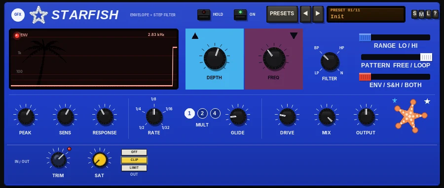

EQ & filters
Starfish
An envelope and step filter: auto-wah quack or random steps in time with the project.

Overview
Starfish is an automatic filter in the spirit of the classic 70s envelope-filter pedals and the modern sample-and-hold filter boxes. A resonant two-pole filter is swept either by your playing or by random steps in time with the project.
In ENV mode, an envelope follower moves the filter as you play - the classic auto-wah quack. In S&H mode, the filter jumps to a new random setting on every step of the beat. In BOTH, the steps are scaled by how hard you play.
The filter can be low-pass, band-pass, high-pass or notch, and the sweep can go up or down. The display shows the cutoff over time, with a line for each step.
Reach for it for
- Funk guitar and clav auto-wah
- Quacky, envelope-swept bass
- Rhythmic random filter steps on synths, pads and drum loops
- Talking, vocal-like sweeps (slow RESPONSE)
- Static resonant filtering with HOLD
Controls
Display
- Cutoff display
- The filter cutoff over time on a 100 Hz - 10 kHz scale, with the current value at the top right. In the step modes, a faint line marks each new step.
- ENV
- Lights when the envelope follower is responding to your playing.
Sweep
- UP / DOWN
- The sweep direction. Click the arrow at the top of the blue (UP) or red (DOWN) block; the active side lights up. UP (default) opens the filter as you play; DOWN closes it.
- DEPTH
- How far the sweep goes, 0 to 6 octaves (3.5 by default).
- FREQ
- Where the sweep starts, 60 Hz to 3 kHz (250 Hz by default).
- FILTER
- The filter type: LP (low-pass), BP (band-pass, the default and the classic wah sound), HP (high-pass) or N (notch).
- RANGE LO / HI
- HI moves the whole sweep up an octave.
- PATTERN FREE / LOOP
- FREE: a new random step every time. LOOP (default): a one-bar random pattern that repeats, so the steps groove with the music.
- ENV / S&H / BOTH
- The mode. ENV (default): your playing sweeps the filter. S&H: random steps in time with the project. BOTH: the steps, scaled by how hard you play.
Envelope
- PEAK
- The filter's resonance, 0.5 to 15 (4 by default). Higher settings give a sharper, vocal quack.
- SENS
- How strongly your playing drives the sweep, 0 to 100% (60% by default).
- RESPONSE
- How fast the envelope follows your playing, 0 to 100% (40% by default): low settings are fast and snappy, high settings slow and vocal.
Steps
- RATE
- The step length: 1/2, 1/4, 1/8 (default), 1/16 or 1/32 of a note, following the project tempo (120 BPM if there is none).
- MULT 1 / 2 / 4
- Multiplies the number of steps: x1, x2 or x4.
- GLIDE
- Smooths the jump between steps, 0 to 100% (15% by default). 0 gives hard steps; higher settings slide from one to the next.
Output
- DRIVE
- Pushes the filter for a fatter, grittier sound, 0 to 100% (20% by default).
- MIX
- Dry / filtered balance, 0 to 100% (100% by default).
- OUTPUT
- Output level, -12 to +12 dB.
IN / OUT
- TRIM
- Input level before anything else, from -24 to +12 dB. A single click on the knob (without dragging) switches GUARD on or off; its LED sits at the knob's upper right.
- GUARD
- On by default. Gently eases very hot sources down towards about -18 dBFS average and catches fast peaks above -6 dBFS, so loud sources never overdrive the plugin. It never boosts quiet sources. The LED glows brighter while it is working.
- SAT
- Band saturation on the way out: only the lows and highs are saturated (the mids stay clean), with a soft curve that loosens as the level rises.
- OFF / CLIP / LIMIT (OUT)
- The final stage: nothing, a soft clipper at -0.3 dBFS (no latency, the default), or a lookahead limiter holding the peaks at -0.3 dBFS (3 ms latency, compensated by REAPER). The CLIP key flashes red while it is clipping.
The header
- HOLD
- Freezes the filter where it is. The sweep stops until you switch it off.
- ON
- Switches the effect in or out (in by default). Out, the dry signal passes through.
- PRESETS
- Opens the list of factory presets; the arrows step through them and the display shows the one in use (click it for the list too). Presets set the filter controls, MIX, OUTPUT, ON and HOLD; the IN / OUT strip is left alone. The last entry resets everything to the defaults.
- S / M / L
- Panel size: small, medium or large.
- ?
- Opens a pop-up with the design credit, the GFX website address and the address of this manual. Click anywhere to close it.
Presets
- Init
- The default settings: an upward band-pass envelope wah from 250 Hz. A new instance opens on it.
- Funk Up
- The classic upward band-pass envelope wah.
- Bass Quack (down)
- Low-pass sweeping down from 900 Hz with more resonance and drive - for bass.
- Ship Steps
- Band-pass random steps on 1/16 notes, looping each bar, with little glide.
- Random Gurgle
- Low-pass random steps on doubled 1/8 notes, FREE pattern and plenty of glide, high resonance.
- Envelope Steps
- BOTH mode: 1/16 steps scaled by your playing.
- Notch Sweep
- A notch swept up by the envelope, slower response, no drive.
- Slow Talker
- Band-pass with high resonance and a slow response, for a talking, vocal sweep.
- Clav Wah
- A fast, bright band-pass wah in the HI range with extra drive.
- Synth Blips
- Band-pass random steps on 1/32 notes in the HI range, no glide, very resonant.
- Lowpass Bloom
- A wide low-pass envelope sweep from 120 Hz, gentle resonance and slow response.
- Reset all to defaults
- Every control back to its starting value, including the IN / OUT strip.
Tips
- Set SENS by watching the display: the cutoff line should rise well on hard notes and fall back between them.
- For a classic funk wah, use BP, UP, a PEAK around 5 and a low RESPONSE so each note quacks quickly.
- The step modes follow the project tempo and position, so S&H patterns stay in time when you start playback anywhere.
- Use LOOP for steps that repeat every bar and groove; FREE for constantly changing textures.
- Find a sweet spot by ear, then press HOLD to keep it as a fixed resonant filter.
File: gfx-starfish.jsfx